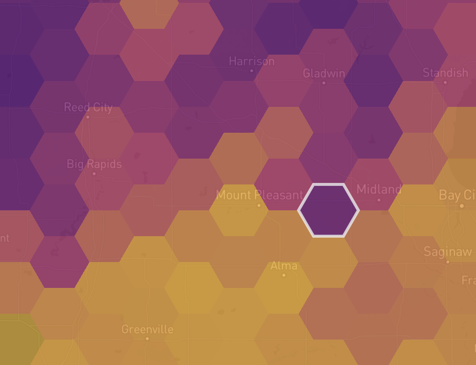
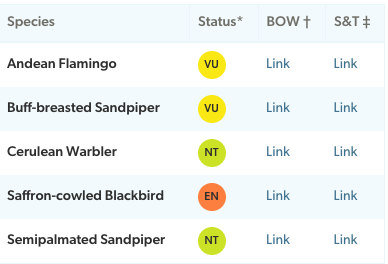
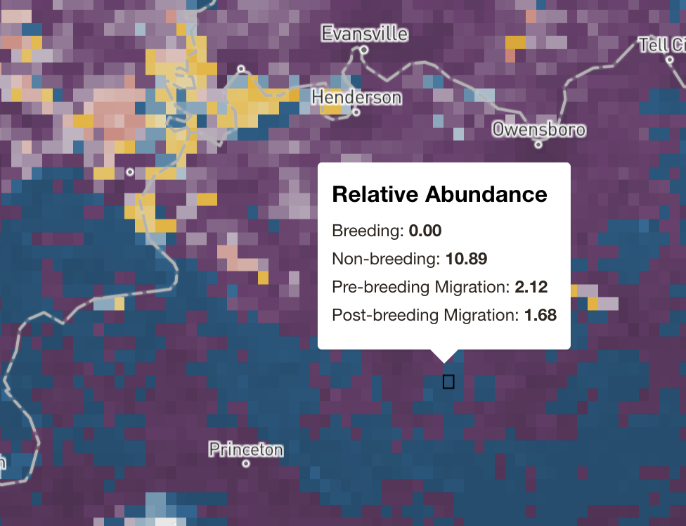
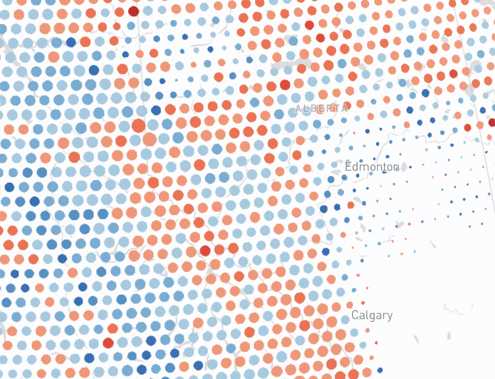
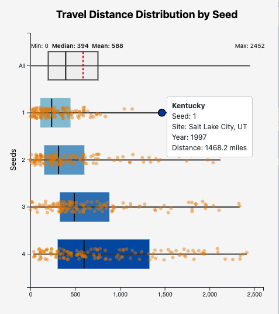

I'm a geographer-turned-software developer with expertise in interactive web maps. I build dashboards and data-driven decision support tools that bring clarity to difficult data. My goal is to present data in a clear, concise, and beautiful way that allows people to derive insights without any technical expertise. I currently work as a Data Visualization Developer at Cornell Lab of Ornithology.
When I'm not working, I enjoy baking, reading, and listening to audiobooks. Lately, I spend most of my free time knitting while watching sitcoms or college basketball (go cats!).


Pilot platform done in collaboration with the Convention on the Conservation of Migratory Species designed to support the identification and prioritization of critical migration, breeding, and non-breeding sites for migratory birds across the Americas.

Interactive dashboard for abundance, range, and trends data for 2900+ bird species. This is a professional project for Cornell Lab of Ornithology that focused on making complicated, high-resolution spatial bird data accessible to non-experts. It includes dynamic charts and maps that calculate population statistics on the fly.

Scrollytelling app to accompany Science publication North American bird declines are greatest where species are most abundant. This is a professional project for Cornell Lab of Ornithology that highlights the real world impacts of bird declines by connecting the user to four specific bird species experiencing losses.

Scrollytelling story + dashboard exploring travel distance to site locations for top-seeded men's basketball teams during March Madness. I created this project for my MS in Digital Mapping and completed the entire project lifecycle, including ideation, wireframing, data munging, and project execution.